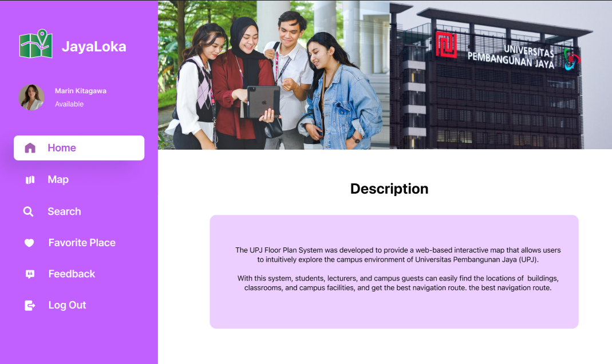

Halo, Saya 👋
Gabriel Davinche Manalu
Mahasiswa Informatika
Saya adalah mahasiswa Informatika yang memiliki ketertarikan pada Artificial Intelligence, Machine Learning, dan UI/UX Design. Selama masa perkuliahan, saya telah mengerjakan berbagai proyek mulai dari Computer Vision, Natural Language Processing, dan Deep Learning, hingga pengembangan prototype aplikasi.

Projects



Jayaloka – Campus Navigation Website UI/UX Design
Desain UI/UX website navigasi kampus yang dirancang untuk membantu pengguna menemukan gedung, ruangan, dan informasi lokasi di lingkungan Universitas Pembangunan Jaya melalui peta interaktif.